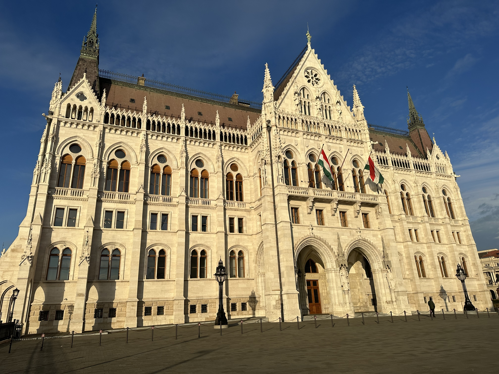
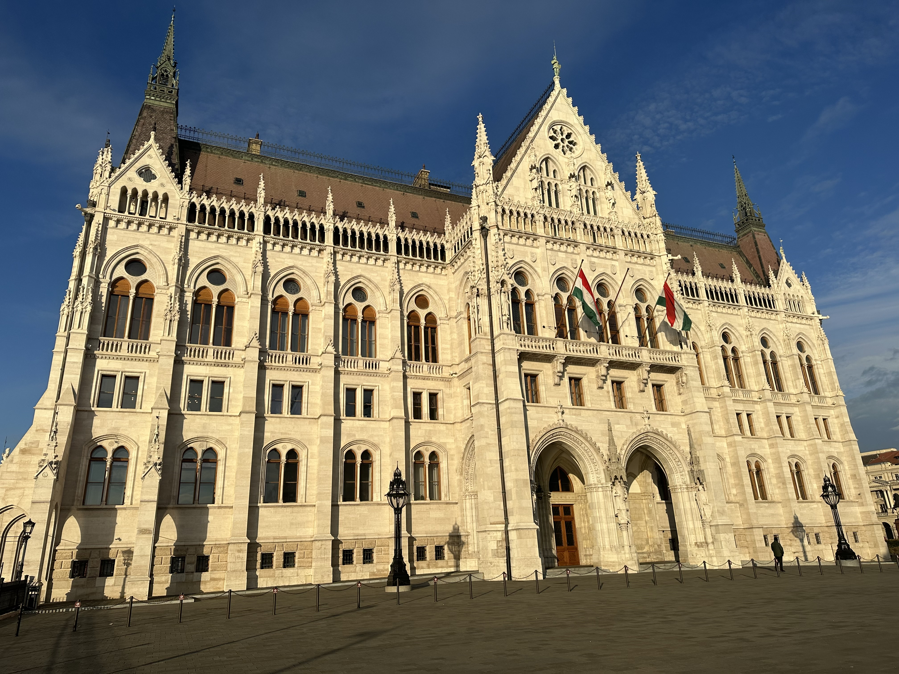

Budapest, the stunning capital of Hungary, is a city of rich history, breathtaking architecture, and vibrant culture. Straddling the mighty Danube River, it is often referred to as the "Pearl of the Danube" for its beauty and charm. The city is a harmonious blend of two distinct areas: Buda, with its rolling hills and historic castles, and Pest, the bustling flatlands filled with cultural landmarks.
 


Budapest is steeped in history, offering visitors a glimpse into its past through its well-preserved landmarks. One of the most iconic sights is the Buda Castle, a UNESCO World Heritage Site perched on Castle Hill. Here, visitors can walk through medieval courtyards and enjoy panoramic views of the city. Another must-see is the Parliament Building, a magnificent example of neo-Gothic architecture that dominates the Pest side of the river.
The Chain Bridge connects Buda and Pest, symbolizing the unity of the city and offering stunning views of the river, especially when illuminated at night. Each landmark tells a story of a city that has seen everything from the Ottoman Empire to World War II.
Budapest is not just about the past-it's a city that embraces modernity with a vibrant art scene, trendy cafes, and a lively nightlife. The ruin bars in the Jewish Quarter are particularly famous, housed in abandoned buildings and courtyards, offering a unique, eclectic experience. These bars combine history and contemporary culture in a way that's uniquely Budapest.
For those seeking relaxation, the city is also known for its thermal baths, such as the Szechenyi Thermal Bath, one of the largest in Europe. Visitors can soak in naturally heated waters, a tradition that dates back to Roman times, making it the perfect way to unwind after a day of exploring.
Budapest's cultural life is thriving. The city hosts numerous festivals throughout the year, including the Budapest Spring Festival and Sziget Festival, one of Europe's largest music events. Museums like the Museum of Fine Arts and the House of Terror offer deep dives into Hungary's art and history, appealing to a wide range of interests.
The city's culinary scene is equally impressive. From classic Hungarian dishes like goulash and chimney cake to modern gastronomic experiments, Budapest is a haven for food lovers.